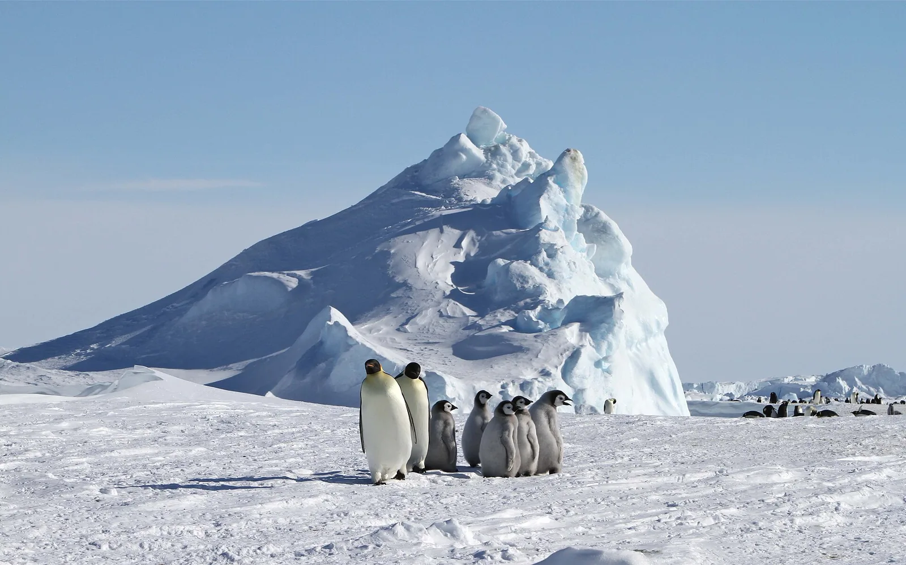
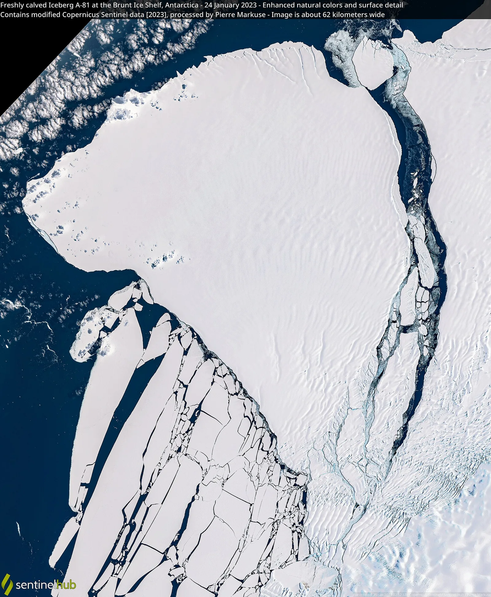
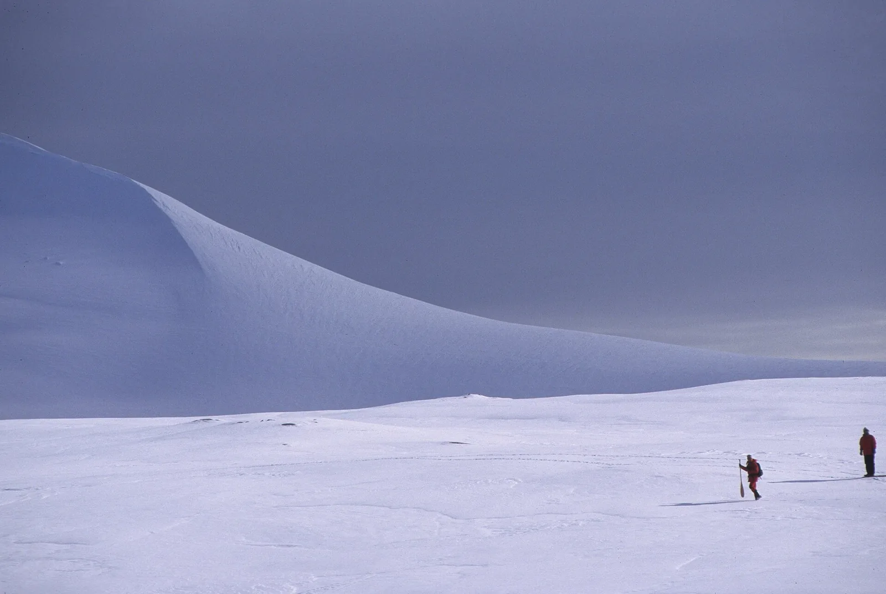

S1 · Sur
S1 · Süden
S1 · South
Antártida
Vi un continente blanco como el fuego de las estrella. Allí el pingüino emperador pasa dos meses sin comer a cuarenta grados bajo cero.
Ich sah einen Kontinent, weiß wie das Feuer der Sterne. Dort verbringt der Kaiserpinguin zwei Monate ohne Nahrung, bei vierzig Grad unter null.
I saw a continent white as the fire of the stars. There the emperor penguin spends two months without eating, at forty degrees below zero.
Información
La Antártida es el continente más frío, más seco y más ventoso del planeta, y está cubierto casi por completo de hielo. En su invierno, cuando el mar se congela, el pingüino emperador cría ahí: los machos incuban el huevo sobre sus patas, apretados en grupo, sin comer durante unos dos meses y soportando temperaturas que caen por debajo de los cuarenta grados bajo cero.
Las crías dependen del hielo marino: necesitan que la plataforma aguante hasta que les crezca el plumaje impermeable. Si el hielo se rompe antes, caen al agua sin poder flotar ni regular su temperatura.
Information
La Antártida es el continente más frío, más seco y más ventoso del planeta, y está cubierto casi por completo de hielo. En su invierno, cuando el mar se congela, el pingüino emperador cría ahí: los machos incuban el huevo sobre sus patas, apretados en grupo, sin comer durante unos dos meses y soportando temperaturas que caen por debajo de los cuarenta grados bajo cero.
Las crías dependen del hielo marino: necesitan que la plataforma aguante hasta que les crezca el plumaje impermeable. Si el hielo se rompe antes, caen al agua sin poder flotar ni regular su temperatura.
Information
La Antártida es el continente más frío, más seco y más ventoso del planeta, y está cubierto casi por completo de hielo. En su invierno, cuando el mar se congela, el pingüino emperador cría ahí: los machos incuban el huevo sobre sus patas, apretados en grupo, sin comer durante unos dos meses y soportando temperaturas que caen por debajo de los cuarenta grados bajo cero.
Las crías dependen del hielo marino: necesitan que la plataforma aguante hasta que les crezca el plumaje impermeable. Si el hielo se rompe antes, caen al agua sin poder flotar ni regular su temperatura.
Vi al pingüino emperador perder a todas sus crías porque el hielo se rompió antes de que aprendieran a nadar.
Ich sah den Kaiserpinguin all seine Jungen verlieren, weil das Eis brach, bevor sie schwimmen gelernt hatten.
I saw the emperor penguin lose all its chicks because the ice broke before they had learned to swim.
En la primavera de 2022, cuatro de las cinco colonias de pingüino emperador del mar de Bellingshausen no sacaron adelante ninguna cría. El hielo marino se rompió antes de que los pichones tuvieran plumaje impermeable. En noviembre de ese año, el sector central y oriental de ese mar perdió el 100 % de su hielo.
Es el primer caso documentado de una falla reproductiva generalizada de la especie vinculada claramente a la contracción del hielo marino a gran escala. En la colonia de Halley Bay, en el mar de Weddell, el fracaso ya se había repetido tres temporadas seguidas desde 2016.
En la primavera de 2022, cuatro de las cinco colonias de pingüino emperador del mar de Bellingshausen no sacaron adelante ninguna cría. El hielo marino se rompió antes de que los pichones tuvieran plumaje impermeable. En noviembre de ese año, el sector central y oriental de ese mar perdió el 100 % de su hielo.
Es el primer caso documentado de una falla reproductiva generalizada de la especie vinculada claramente a la contracción del hielo marino a gran escala. En la colonia de Halley Bay, en el mar de Weddell, el fracaso ya se había repetido tres temporadas seguidas desde 2016.
En la primavera de 2022, cuatro de las cinco colonias de pingüino emperador del mar de Bellingshausen no sacaron adelante ninguna cría. El hielo marino se rompió antes de que los pichones tuvieran plumaje impermeable. En noviembre de ese año, el sector central y oriental de ese mar perdió el 100 % de su hielo.
Es el primer caso documentado de una falla reproductiva generalizada de la especie vinculada claramente a la contracción del hielo marino a gran escala. En la colonia de Halley Bay, en el mar de Weddell, el fracaso ya se había repetido tres temporadas seguidas desde 2016.
Galería
Galerie
Gallery



Fuentes
Quellen
Sources
- British Antarctic Survey, Loss of sea ice causes catastrophic breeding failure for emperor penguins — https://www.bas.ac.uk/news/loss-of-sea-ice-causes-catastrophic-breeding-failure-for-emperor-penguins/ consultado 2026-10-05abgerufen 2026-10-05accessed 2026-10-05
- Communications Earth & Environment (Nature), Record low 2022 Antarctic sea ice led to catastrophic breeding failure of emperor penguins (doi:10.1038/s43247-023-00927-x) — https://www.nature.com/articles/s43247-023-00927-x consultado 2026-10-05abgerufen 2026-10-05accessed 2026-10-05